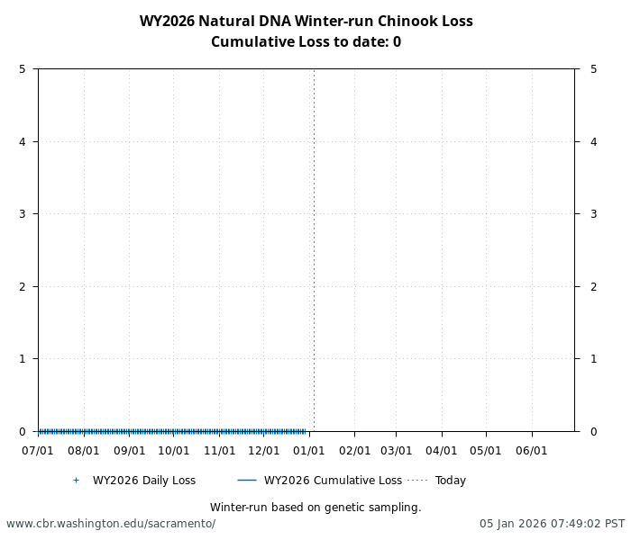
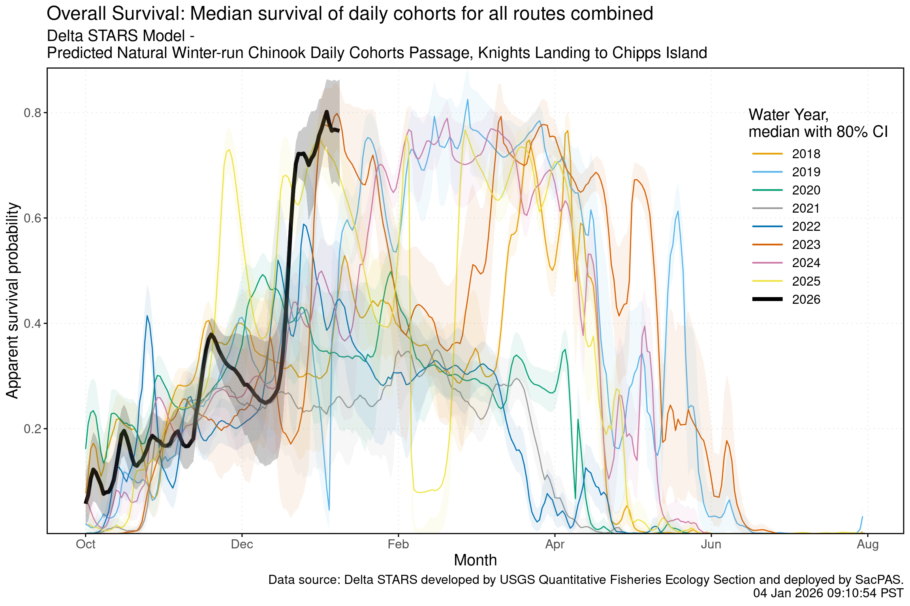
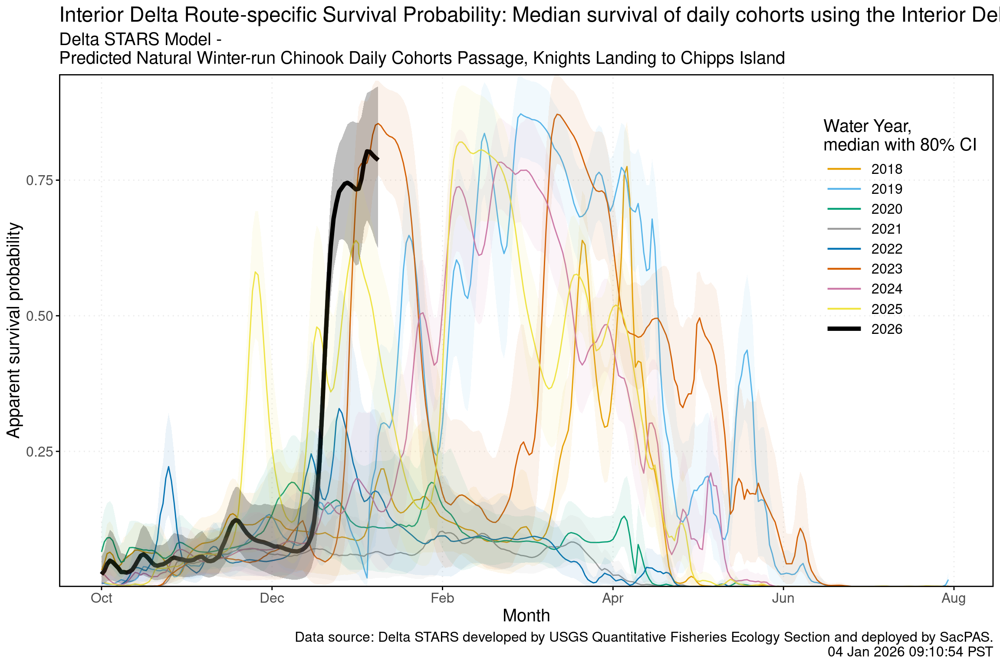
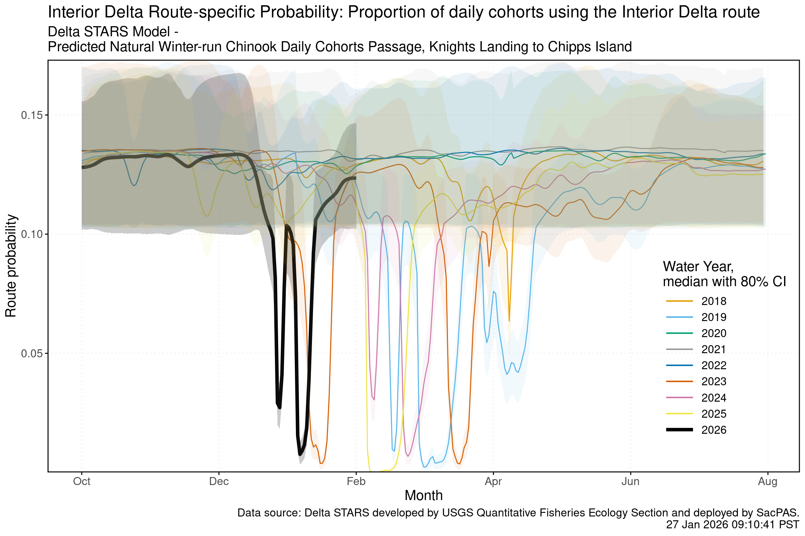
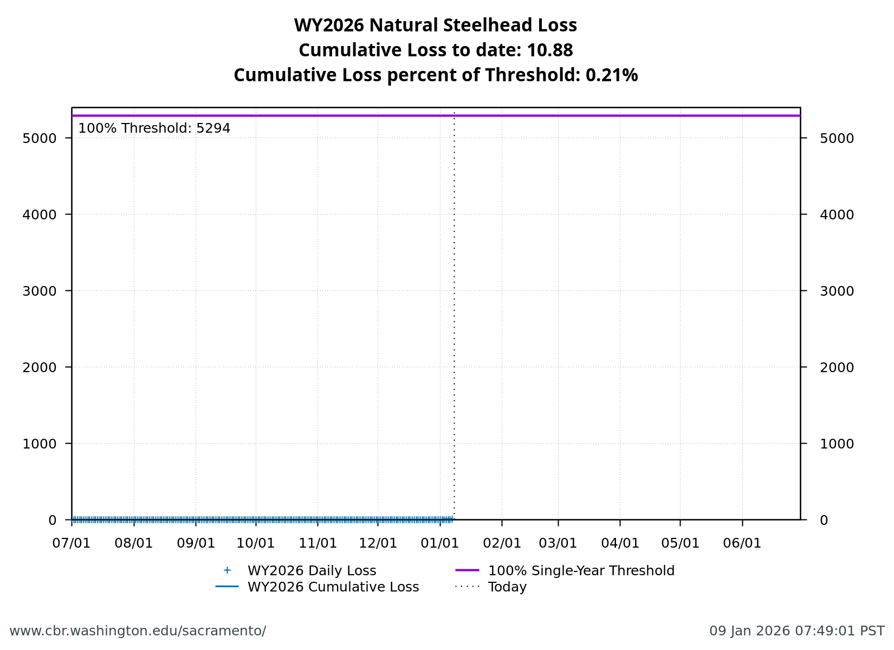
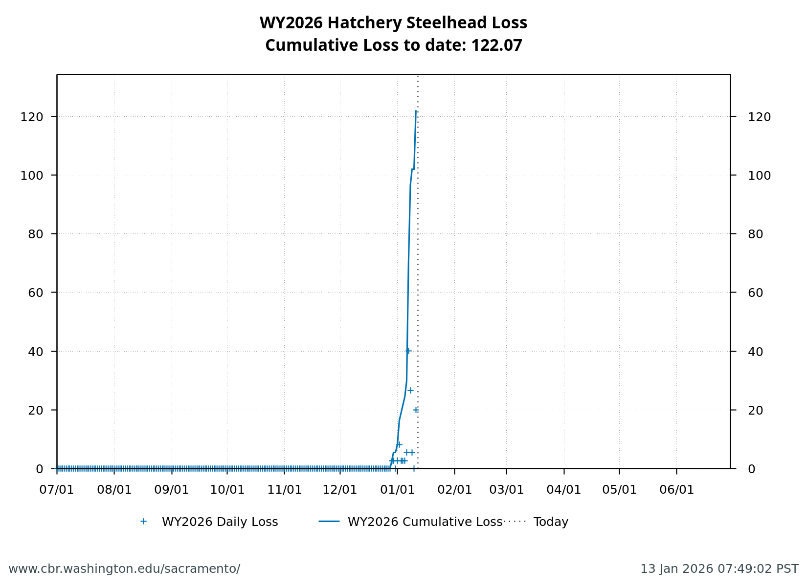

PRELIMINARY DATA: Assessment for Delta Operations on ESA and CESA-listed Salmonids
Last updated: January 08, 2026
For more detailed data on salmonid conditions in the Delta see corresponding webpage on SacPAS.
Executive Summary
Entrainment management season is active.
Season Loss: 0 DNA Winter-run, 2.88 LAD Winter-run, 0 Hatchery Winter-run, 5.44 Natural Steelhead, and 29.92 Hatchery Steelhead.
Winter-run presence in the Delta is high (historical peak).
Steelhead presence in the Delta is increasing.
Natural Winter-run Chinook
Juvenile Production Estimate
The Juvenile Production Estimate for winter-run is 1,057,452 for the current water year.
Current Status
Entry Timing - Historically, as of Jan 07, 70% of length-at-date (LAD) winter-run have entered the delta based on Knights Landing RST catch, 2% have exited the delta based on Chipps Island Trawl Catch, and 0% of DNA confirmed winter-run have been salvaged.
| Species | Red Bluff Diversion Dam | Tisdale RST | Knights Landing RST | Sac Trawl (Sherwood) | Chipps Island Trawl | Salvage |
|---|---|---|---|---|---|---|
| Chinook, LAD Winter-run, Unclipped | 98% | 74% | 70% | 38% | 2% | 12% |
| Chinook, DNA Winter-run, Unclipped (Water Year) | NA | NA | NA | NA | NA | 0% |
Red Bluff Diversion Dam Passage Estimate - As of Dec 16 estimated passage to date of LAD winter run at Red Bluff Diversion is approximately 3.61 million fish. * Note that outmigration timing overlaps with spring run migrating fish, and true winter-run abundance likely differs from these estimates.
Delta Monitoring - Total catch of LAD winter run at RSTs at Delta Entry (Tisdale, Knights Landing, Lower Sacramento River) between Dec 27 and Jan 07 is 142 individuals. Total catch at Sacramento Trawl and Beach Seines in the delta between Dec 29 and Jan 07 is 19 individuals. Total catch at Delta Exit at Chipps Island between Dec 29 and Jan 06 is 1 individuals.
Annual Loss
The annual Loss threshold for natural winter-run is 1% of the jpe or 10,574.52 fish. As of January 07, cumulative loss of genetically confirmed winter-run is 0 or 0.00% of the annual loss threshold. Cumulative loss in the past 7 days has been 0.
STARS
The Delta STARS Model is an individual-based simulation model that predicts survival, travel time, and routing of juvenile salmon migrating through the Sacramento–San Joaquin River Delta. This model gives insight into survival and routing patterns of winter-run based on most current conditions.
As of January 07, overall through delta STARS estimated survival probability (with 80% credible intervals) is 0.71 (0.62-0.8) placing it in the 91st percentile of historical STARS survival estimates for the month of January (WYs 2018-2025). STARS estimated routing and survival probabilities (with 80% credible intervals) into the interior delta are 0.01 (0-0.02) and 0.8 (0.7-0.89), respectively, corresponding to the 2nd and 96th percentiles of historical January estimates (WYs 2018-2025).



Hatchery Winter-run Chinook
Hatchery Releases
To date, no winter-run Livingstone hatchery releases have occurred in WY 2026
Juvenile Production Estimate
The Juvenile Production Estimate for hatchery winter-run is 130,096 for Livingston Stone releases.
Annual Loss
To date, no loss has occurred as no hatchery winter-run have been released.
Natural-origin Central Valley Steelhead
Current Status
Delta Entry Timing - Historically, as of Jan 07, 11% of CCV steelhead have entered the delta based on Knights Landing RST catch, 1% have exited the delta based on Chipps Island Trawl Catch, and 4% have been salvaged.
| Species | Red Bluff Diversion Dam | Tisdale RST | Knights Landing RST | Sac Trawl (Sherwood) | Chipps Island Trawl | Salvage |
|---|---|---|---|---|---|---|
| Steelhead, Unclipped | 0% | 3% | 11% | 0% | 1% | 4% |
Delta Monitoring - Total catch of LAD winter run at RSTs at Delta Entry (Tisdale, Knights Landing, Lower Sacramento River) between Dec 27 and Jan 07 is 0 individuals. Total catch at Sacramento Trawl and Beach Seines in the delta between Dec 29 and Jan 07 is 0 individuals. Total catch at Delta Exit at Chipps Island between Dec 29 and Jan 06 is 0 individuals.
Annual Loss
As of January 07, cumulative loss of unclipped steelhead is 5.44 or 0.10% of the incidental take limit in the NMFS Biological Opinion. Cumulative loss in the past 7 days has been 24.48.

Hatchery-origin Central Valley Steelhead
Surrogate Releases
There have been a total of 2 releases totaling 878,848 steelhead in Water Year 2026. JPE for the hatchery releases as of today is 356,526 based on estimated survivals using forecasted water year types (see details in table below). The annual loss threshold, equal to 1% of the JPE, is currently 3565, but is subject to change with additional steelhead releases.
| Hatchery | Date of Release | Mean Fork Length (mm) | Number Released | Estimated Survival | Juvenile Production Estimate |
|---|---|---|---|---|---|
| Nimbus | 2025-11-02 | 223 | 233,109 | 72% | 167,838 |
| Coleman | 2025-12-19 | 195 | 645,739 | 29% | 188,688 |
Total loss of hatchery-origin steelhead is 29.92 or 0.84% of the threshold. *Note that hatchery origin of salvaged fish can not be determined at this time and salvage is based on the assumption of similar routing and survival probabilities of individual hatchery releases.

Spring-run
Current Status
Delta Entry Timing- Historically, as of Jan 07, 24% of LAD spring run have entered the delta based on Knights Landing RST catch, 0% have exited the delta based on Chipps Island Trawl Catch, and 0% have been salvaged.
| Species | Red Bluff Diversion Dam | Tisdale RST | Knights Landing RST | Sac Trawl (Sherwood) | Chipps Island Trawl | Salvage |
|---|---|---|---|---|---|---|
| Chinook, LAD Spring-run, Unclipped | 12% | 12% | 24% | 2% | 0% | 0% |
Red Bluff Diversion Dam Passage Estimate - As of Dec 16 estimated passage to date of LAD spring run at Red Bluff Diversion is approximately 0.01 million fish. * Note that outmigration timing overlaps with winter run and fall run outmigration, and true spring run abundance likely differs from these estimates.
Delta Monitoring- Total catch of LAD winter run at RSTs at Delta Entry (Tisdale, Knights Landing, Lower Sacramento River) between Dec 27 and Jan 07 is 127 individuals. Total catch at Sacramento Trawl and Beach Seines in the delta between Dec 29 and Jan 07 is 0 individuals. Total catch at Delta Exit at Chipps Island between Dec 29 and Jan 06 is 0 individuals.
Surrogate Releases
A total of 135,992 yearling surrogate fish have been released across 2 releases and a total of 0 young-of-year surrogate fish have been released across 0 releases. See details in table below.
| Type | Hatchery | Release Start | Release End | Race | # of CWT Fish Released | Loss Threshold (1% of CWT Released) | Loss (% of threshold) |
|---|---|---|---|---|---|---|---|
| Yearling | Coleman NFH | 2025-11-17 | 2025-11-17 | Late-Fall | 75119 | 751.19 | 0 (0.00%) |
| Yearling | Coleman NFH | 2025-12-22 | 2025-12-22 | Late-Fall | 60873 | 608.73 | 60.67 (0.10%) |
Evaluation
What is the probability of exceeding natural or hatchery winter-run Chinook Salmon loss thresholds in the upcoming week?
What is the probability of spring-run hatchery Chinook Salmon loss thresholds in the upcoming week?
What is the probability of spring-run hatchery Chinook Salmon loss thresholds in the upcoming week?